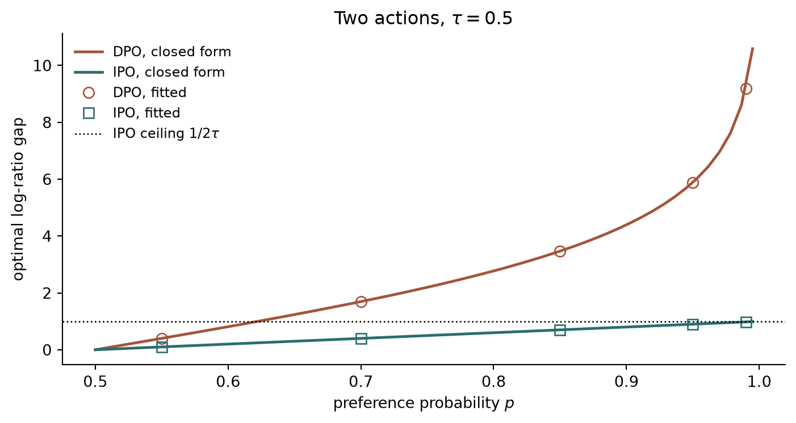
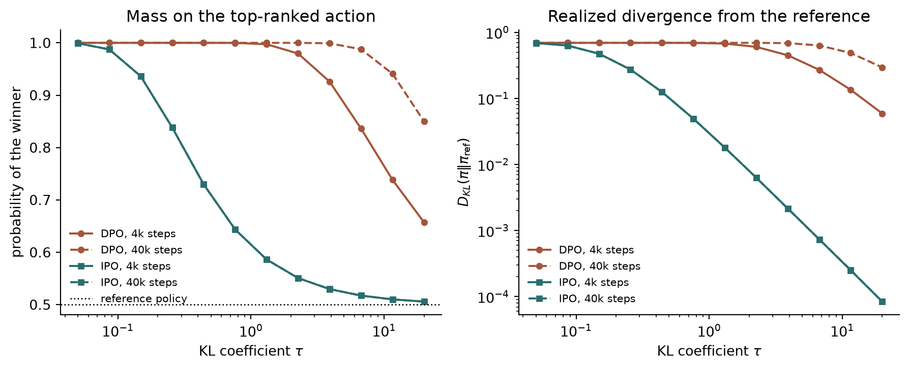
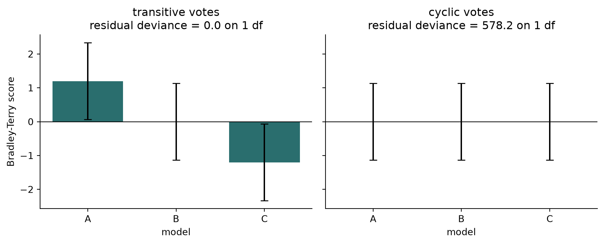
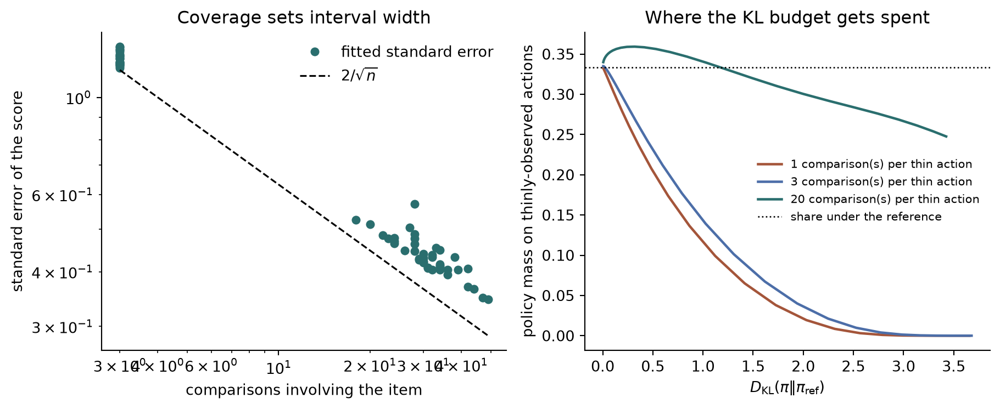

The Bradley-Terry model trains alignment objectives and ranks the models they produce, and the same three failures show up on both sides of that loop.
Author
Diego Filippo Marino
Published
August 14, 2026
A 1952 paper on incomplete block designs (Bradley and Terry 1952) now sits in two places at once in the language-model pipeline. It is the likelihood a reward model maximizes when it learns from human comparisons (Christiano et al. 2017), the likelihood Direct Preference Optimization folds into the policy itself (Rafailov et al. 2023), and the likelihood Chatbot Arena maximizes to produce the leaderboard those policies are judged on (Chiang et al. 2024).
Training and evaluation therefore share a statistical model. That is worth examining, because a modeling assumption used twice is not audited twice. Whatever the Bradley-Terry likelihood cannot represent is invisible on both sides of the loop.
This article works through the shared object in a setting small enough to solve exactly: a single context with a handful of actions. Three closed-form results fall out. The gap between Direct Preference Optimization and Identity Preference Optimization is a single tail behaviour, not a different philosophy. The finite-sample saturation that breaks the first is quantifiable in advance from the number of comparisons collected. And the leaderboard inherits an unmeasured misfit whenever preferences are not transitive, which is measurable with a statistic nobody reports.
The objective and its closed-form policy
Preference-based fine-tuning maximizes a learned reward under a divergence penalty:
Over a finite action set this is a concave problem with a simple solution. Write the Lagrangian with a multiplier for \sum_y \pi(y) = 1, differentiate, and the stationarity condition r(y) - \tau(\log \pi(y) - \log \pi_{\text{ref}}(y) + 1) = \lambda rearranges to
\pi_\tau(y) = \frac{1}{Z}\,\pi_{\text{ref}}(y)\,\exp\!\left(\frac{r(y)}{\tau}\right),
\qquad
Z = \sum_{y'} \pi_{\text{ref}}(y')\exp\!\left(\frac{r(y')}{\tau}\right).
\tag{2}
Equation Equation 2 is a Gibbs distribution: the reference policy tilted by the reward at temperature \tau. Inverting it gives the identity Direct Preference Optimization is built on,
Bradley-Terry depends on rewards only through differences, so the \tau \log Z term cancels inside any pairwise comparison, and the preference likelihood can be written directly in terms of the policy. Define the log-ratioh(y) = \log\bigl(\pi(y)/\pi_{\text{ref}}(y)\bigr). Then the two offline objectives under discussion are
with \beta = \tau playing the role of the KL coefficient in the first (Rafailov et al. 2023) and \tau the same role in the second (Azar et al. 2024). Identity Preference Optimization is the \Psi = \mathrm{identity} member of a family in which the logit link recovers RLHF and DPO, and its motivation is that the logit is unbounded while the identity is not.
The two losses are the same loss except in the tail
For two actions the population optima of Equation 4 can be written down. Let p = \Pr(y_1 \succ y_2) and let h = h(y_1) - h(y_2) be the log-ratio gap.
For DPO the expected loss is -p\log\sigma(\beta h) - (1-p)\log\sigma(-\beta h). Differentiating and using \sigma' = \sigma(1-\sigma) gives p\,(1 - \sigma(\beta h)) = (1-p)\,\sigma(\beta h), so \sigma(\beta h) = p and
For IPO the expected loss is p\,(h - c)^2 + (1-p)\,(-h - c)^2 with c = 1/(2\tau), since swapping the pair flips the sign of the gap. Expanding, the derivative is 2h - 2c(2p-1), so
Both scale as 1/\tau, as a KL-regularized objective should. Near indifference they agree up to a constant: \log\frac{p}{1-p} \approx 4(p - \tfrac12) for p near \tfrac12, so h^\star_{\mathrm{DPO}} \approx 4\,h^\star_{\mathrm{IPO}}, a difference absorbed by rescaling \tau. The methods separate only as p \to 1, where Equation 5 diverges logarithmically and Equation 6 saturates at 1/(2\tau).
That is the whole disagreement, and it is worth being precise about it because “DPO overfits, IPO does not” invites the reading that they encode different values. They encode the same values. One of them extrapolates an unbounded target from a bounded observation.
import numpy as npimport matplotlib.pyplot as pltrng = np.random.default_rng(3)def sigmoid(z):return0.5* (1.0+ np.tanh(0.5* z))def adam(grad_fn, x0, steps, lr=0.02):"""Plain Adam, used so that comparisons are not confounded by gradient scale.""" x, m, v = x0.copy(), np.zeros_like(x0), np.zeros_like(x0)for t inrange(1, steps +1): g = grad_fn(x) m =0.9* m +0.1* g v =0.999* v +0.001* g * g x -= lr * (m / (1-0.9** t)) / (np.sqrt(v / (1-0.999** t)) +1e-8)return xdef fit_policy(counts, ref, tau, loss, steps=4000, lr=0.02):"""Fit a softmax policy to pairwise counts; counts[i, j] = times i beat j.""" log_ref = np.log(ref)def grad_fn(theta): logits = theta - theta.max() pi = np.exp(logits) / np.exp(logits).sum() h = np.log(pi) - log_ref gaps = h[:, None] - h[None, :]if loss =="dpo": w = counts * tau * sigmoid(-tau * gaps) grad_h =-w.sum(axis=1) + w.sum(axis=0)else: w =2.0* counts * (gaps -1.0/ (2.0* tau)) grad_h = w.sum(axis=1) - w.sum(axis=0)return grad_h - pi * grad_h.sum() theta = adam(grad_fn, np.zeros(len(ref)), steps, lr) logits = theta - theta.max()return np.exp(logits) / np.exp(logits).sum()def fit_two_action(p, tau, loss, steps=6000): pi = fit_policy(np.array([[0.0, p], [1.0- p, 0.0]]), np.array([0.5, 0.5]), tau, loss, steps)returnfloat(np.log(pi[0] / pi[1]))tau =0.5probs = np.linspace(0.5, 0.995, 60)markers = np.array([0.55, 0.7, 0.85, 0.95, 0.99])fig, ax = plt.subplots(figsize=(7.4, 4.0))ax.plot(probs, np.log(probs / (1- probs)) / tau, color="#a4553a", lw=1.8, label="DPO, closed form")ax.plot(probs, (2* probs -1) / (2* tau), color="#2a6e6e", lw=1.8, label="IPO, closed form")ax.plot(markers, [fit_two_action(p, tau, "dpo") for p in markers], "o", ms=7, mfc="none", color="#a4553a", label="DPO, fitted")ax.plot(markers, [fit_two_action(p, tau, "ipo") for p in markers], "s", ms=7, mfc="none", color="#2a6e6e", label="IPO, fitted")ax.axhline(1.0/ (2* tau), color="black", ls=":", lw=1.0, label=r"IPO ceiling $1/2\tau$")ax.set(xlabel="preference probability $p$", ylabel="optimal log-ratio gap", title=r"Two actions, $\tau = 0.5$")ax.legend(frameon=False, fontsize=9)ax.spines[["top", "right"]].set_visible(False)plt.tight_layout()plt.show()

Figure 1: Population optimal log-ratio gap as a function of the preference probability, at a fixed regularization strength. Curves are the closed forms; markers are gradient descent on the corresponding empirical loss with a large sample. The methods agree until preferences approach certainty.
Saturation is a sample-size event, not a data property
The tail behaviour would be harmless if preferences were rarely certain. The trouble is that with a small number of comparisons per pair, the empirical preference saturates even when the true one does not, and Equation 5 is evaluated at the empirical value.
If a pair is compared n times with true probability p, the empirical estimate \hat p is degenerate exactly when one side wins every comparison:
\Pr\bigl(\hat p \in \{0, 1\}\bigr) = p^{\,n} + (1-p)^{\,n}.
\tag{7}
For p = 0.8 and n = 3, that is 52%. For p = 0.9 and n = 5, it is 59%. Preference datasets built from a single annotator judgement per pair, which is the common case, have n = 1 and are therefore always degenerate at the level of the individual pair. Whether that matters depends on how much sharing the model does across pairs, but for the bandit it is exact: on any pair the empirical DPO optimum is infinite, and finite optimization time is the only thing standing between the objective and a deterministic policy.
The next block confirms that the pathology is a property of the loss rather than the optimizer, by running both objectives to convergence on a three-action problem with a total order in the data, the setting used in the original analysis (Azar et al. 2024).
ref = np.array([0.5, 0.3, 0.2])counts = np.array([ # a total order: 1 beats 2 and 3, 2 beats 3 [0.0, 1.0, 1.0], [0.0, 0.0, 1.0], [0.0, 0.0, 0.0],])taus = np.geomspace(0.05, 20.0, 12)budgets = [4000, 40000]runs = {(loss, steps): [fit_policy(counts, ref, t, loss, steps=steps) for t in taus]for loss in ("dpo", "ipo") for steps in budgets}fig, axes = plt.subplots(1, 2, figsize=(9.4, 3.9))styles = {("dpo", 4000): ("#a4553a", "o-", "DPO, 4k steps"), ("dpo", 40000): ("#a4553a", "o--", "DPO, 40k steps"), ("ipo", 4000): ("#2a6e6e", "s-", "IPO, 4k steps"), ("ipo", 40000): ("#2a6e6e", "s--", "IPO, 40k steps")}for key, (color, style, label) in styles.items(): pis = runs[key] axes[0].semilogx(taus, [p[0] for p in pis], style, ms=4, color=color, label=label) axes[1].loglog(taus, [float(np.sum(p * np.log(p / ref))) for p in pis], style, ms=4, color=color, label=label)axes[0].axhline(ref[0], color="black", ls=":", lw=1.0, label="reference policy")axes[0].set(xlabel=r"KL coefficient $\tau$", ylabel="probability of the winner", title="Mass on the top-ranked action")axes[1].set(xlabel=r"KL coefficient $\tau$", ylabel=r"$D_{KL}(\pi \Vert \pi_{\mathrm{ref}})$", title="Realized divergence from the reference")for ax in axes: ax.legend(frameon=False, fontsize=8) ax.spines[["top", "right"]].set_visible(False)plt.tight_layout()plt.show()

Figure 2: Three actions with a deterministic total order in the preference data, fitted at two optimization budgets. The bounded objective lands on the same policy either way. The logit objective has no finite optimum here, so its answer is whatever the step budget happens to reach.
Read the dashed and solid lines of each colour against each other. The bounded objective gives the same answer at both budgets, because it has a genuine finite optimum that depends on \tau in the way the practitioner expects: strong regularization keeps the policy close to the reference. The logit objective gives a different answer at each budget, and the difference is largest exactly where the regularization is supposed to be strongest. Its infimum is at the deterministic policy for every \tau, so the fitted policy is wherever the optimizer stopped.
This sharpens the usual statement of the pathology. It is not only that DPO ignores \tau on saturated data. It is that the realized divergence becomes a property of the training schedule, and the KL budget the practitioner thought they were setting is in fact being set by their step count and learning rate. Early stopping is not a convenience in this regime, it is the actual regularizer.
There is a caveat the original analysis states and that is easy to lose. Standard RLHF with a separate reward model does not suffer this as badly, and not because its objective is better. Its reward model is fitted on limited data with limited capacity and is therefore implicitly regularized: the reward it reports for an unseen pair is pulled toward its neighbours. DPO discards the reward model, and with it that accidental shrinkage. Seen this way, IPO’s bounded target is a deliberate replacement for a regularizer that RLHF got for free and DPO threw away.
Binary labels reach the same place
KTO drops the pairwise requirement entirely, scoring each generation as desirable or not and maximizing a prospect-theoretic utility of the implied reward relative to a reference point (Ethayarajh et al. 2024). The claim that it matches paired methods from 1B to 30B is a claim about information content: two independent binary judgements carry, in the aggregate, roughly what one comparison carries.
The bandit lets us check the mechanism directly by generating binary labels from the same underlying quality and comparing the resulting policies.
def kto_policy(desirable, undesirable, ref, beta, steps=6000, lam_d=1.0, lam_u=1.0):"""Fit a policy from binary desirable / undesirable counts. Implied reward r = log(pi / pi_ref); utility sigma(beta (r - z0)) for desirable outputs and sigma(beta (z0 - r)) for undesirable ones, with the reference point z0 = KL(pi || pi_ref) held constant in the gradient, as in the KTO recipe. """ log_ref = np.log(ref)def grad_fn(theta): logits = theta - theta.max() pi = np.exp(logits) / np.exp(logits).sum() r = np.log(pi) - log_ref z0 =float(np.sum(pi * r)) up, dn = sigmoid(beta * (r - z0)), sigmoid(beta * (z0 - r)) grad_r = (-lam_d * desirable * beta * up * (1- up)+ lam_u * undesirable * beta * dn * (1- dn))return grad_r - pi * grad_r.sum() theta = adam(grad_fn, np.zeros(len(ref)), steps) logits = theta - theta.max()return np.exp(logits) / np.exp(logits).sum()
With the fitting machinery in place, the comparison across supervision formats is a few lines.
Figure 3: Policies fitted from the same underlying quality signal delivered three ways: pairwise comparisons under a logit loss, the same comparisons under a bounded loss, and twice as many independent binary desirability labels.
All three orderings agree. The differences are in how much mass the loss is willing to move, which is exactly the inductive bias the KTO paper argues should be chosen deliberately rather than by default. The binary version reaches a comparable policy from labels that are cheaper to collect and that tolerate class imbalance, which is the practical claim.
The same likelihood on the evaluation side
Now switch roles. In Chatbot Arena the items are models rather than responses, the outcome is a crowd vote, and maximum likelihood under the same Bradley-Terry model produces the leaderboard with confidence intervals. The platform moved from sequential Elo to this stationary maximum-likelihood fit precisely to get order-independent estimates and valid intervals.
Two properties transfer directly from the training side.
Scale is not identified. Only differences s_i - s_j enter the likelihood, so the fit is invariant to adding a constant to every score. Reward models handle this by normalizing to zero mean and fixed variance. Leaderboards handle it by anchoring to a reference model. In both cases a reported number is meaningless without its anchor, and comparing scores across leaderboard revisions that re-anchored is a category error.
Transitivity is assumed, not tested. Bradley-Terry asserts that a single scalar per item explains every pairwise rate. If the true preference structure contains cycles, the maximum likelihood fit does not fail loudly. It returns scores that are as close to consistent as possible and reports intervals as though the model were correct.
The cleanest demonstration is a three-model cycle in which each model beats the next four times out of five.
def bt_fit(counts, steps=6000, lr=0.05):"""Maximum likelihood Bradley-Terry scores, centered at zero.""" k = counts.shape[0] s = np.zeros(k)for _ inrange(steps): diff = s[:, None] - s[None, :] p = sigmoid(diff) grad =-(counts * (1- p)).sum(axis=1) + (counts.T * p).sum(axis=1) s -= lr * grad / counts.sum() s -= s.mean()return sdef bt_loglik(counts, s): diff = s[:, None] - s[None, :] p = np.clip(sigmoid(diff), 1e-12, 1-1e-12)returnfloat(np.sum(counts * np.log(p)))def saturated_loglik(counts): total = counts + counts.Twith np.errstate(divide="ignore", invalid="ignore"): p = np.where(total >0, counts / np.maximum(total, 1), 0.5) p = np.clip(p, 1e-12, 1-1e-12)returnfloat(np.sum(counts * np.log(p)))def bt_stderr(counts, s):"""Asymptotic standard errors from the observed Fisher information.""" k = counts.shape[0] total = counts + counts.T p = sigmoid(s[:, None] - s[None, :]) w = total * p * (1- p) info = np.diag(w.sum(axis=1)) - w info = info + np.ones((k, k)) / k # fix the unidentified constantreturn np.sqrt(np.diag(np.linalg.inv(info)))votes =500truth = np.array([1.2, 0.0, -1.2]) # a genuinely transitive worldtransitive = np.zeros((3, 3))for i inrange(3):for j inrange(3):if i != j: transitive[i, j] = votes * sigmoid(truth[i] - truth[j])cyclic = np.array([ # A beats B beats C beats A [0.0, 0.8, 0.2], [0.2, 0.0, 0.8], [0.8, 0.2, 0.0],]) * votesn_pairs =3dof = n_pairs -2# saturated pairs minus free scoresfig, axes = plt.subplots(1, 2, figsize=(9.2, 3.8), sharey=True)for ax, (name, counts) inzip(axes, [("transitive votes", transitive), ("cyclic votes", cyclic)]): s = bt_fit(counts) se = bt_stderr(counts, s) deviance =2.0* (saturated_loglik(counts) - bt_loglik(counts, s)) ax.bar(np.arange(3), s, yerr=1.96* se, capsize=4, color="#2a6e6e") ax.axhline(0.0, color="black", lw=0.8) ax.set(xlabel="model", title=f"{name}\nresidual deviance = {deviance:.1f} on {dof} df") ax.set_xticks(np.arange(3), ["A", "B", "C"])axes[0].set_ylabel("Bradley-Terry score")for ax in axes: ax.spines[["top", "right"]].set_visible(False)plt.tight_layout()plt.show()

Figure 4: Bradley-Terry fits to a transitive vote matrix and to a cyclic one with identical total vote counts. The cyclic case produces three tied scores with tight intervals, and only the residual deviance reveals that the model does not fit.
The transitive matrix, generated from real Bradley-Terry scores, recovers them and leaves a residual deviance near zero, as it should. The cyclic matrix, built from the same number of votes and the same per-pair decisiveness, produces three statistically indistinguishable scores with narrow intervals. Nothing in the leaderboard output signals the problem: the model reports a clean tie among models that beat each other four times out of five. The residual deviance does signal it, by hundreds of units on a single degree of freedom, and it costs one line of code on top of a fit that is already being computed.
That suggests a small and cheap recommendation. A preference leaderboard should publish the deviance between the Bradley-Terry fit and the saturated pairwise model alongside the scores, because it is the only number in the pipeline that distinguishes “these models are equally good” from “these models are good at different things and the ranking has thrown that away”. The same statistic applies unchanged to a reward model’s training set, where a large value means the annotators are not describing a single scalar quality.
The loop closes: coverage is the shared currency
The two halves now meet. On the evaluation side, the width of a leaderboard interval is set by how many votes a model has received, which is why the arena runs an active-sampling rule that serves whichever pair shrinks the intervals fastest. On the training side, the reward is fitted from the same kind of counts and then a policy is optimized against it with Equation 2. The quantity that controls both is per-item coverage, and it obeys the same formula in both roles.
For a Bradley-Terry fit, the observed Fisher information contributed by a pair compared n_{ij} times is n_{ij}\,p_{ij}(1-p_{ij}), so a score’s standard error falls like the inverse square root of its comparison count, and falls fastest for pairs that are close to even. Both facts are visible in one sweep.
n_actions =60true_reward = rng.normal(size=n_actions)true_reward -= true_reward.mean()ref_policy = np.ones(n_actions) / n_actionswell_covered = np.arange(40)thin = np.arange(40, n_actions)def sample_counts(rng_local, thin_budget, dense_budget=600): counts = np.zeros((n_actions, n_actions))for _ inrange(dense_budget): i, j = rng_local.choice(well_covered, size=2, replace=False) winner, loser = (i, j) if rng_local.random() < sigmoid( true_reward[i] - true_reward[j]) else (j, i) counts[winner, loser] +=1for a in thin:for _ inrange(thin_budget): j =int(rng_local.choice(well_covered)) winner, loser = (a, j) if rng_local.random() < sigmoid( true_reward[a] - true_reward[j]) else (j, a) counts[winner, loser] +=1return countsdef tilted(reward, tau): logits = np.log(ref_policy) + reward / tau logits -= logits.max() pi = np.exp(logits)return pi / pi.sum()counts = sample_counts(np.random.default_rng(4), thin_budget=3)scores = bt_fit(counts, steps=4000)errs = bt_stderr(counts, scores)seen = (counts + counts.T).sum(axis=1)fig, axes = plt.subplots(1, 2, figsize=(9.6, 4.0))axes[0].loglog(seen, errs, "o", ms=5, color="#2a6e6e", label="fitted standard error")grid = np.geomspace(seen.min(), seen.max(), 40)axes[0].loglog(grid, 2.0/ np.sqrt(grid), "k--", lw=1.2, label=r"$2/\sqrt{n}$")axes[0].set(xlabel="comparisons involving the item", ylabel="standard error of the score", title="Coverage sets interval width")axes[0].legend(frameon=False)taus = np.geomspace(6.0, 0.05, 30)trials =15for thin_budget, color inzip([1, 3, 20], ["#a4553a", "#4c6ea8", "#2a6e6e"]): xs = np.zeros(len(taus)) ys = np.zeros(len(taus))for trial inrange(trials): fitted = bt_fit(sample_counts(np.random.default_rng(97* trial +5), thin_budget), steps=4000)for k, t inenumerate(taus): pi = tilted(fitted, t) xs[k] +=float(np.sum(pi * np.log(pi / ref_policy))) / trials ys[k] +=float(np.sum(pi[thin])) / trials axes[1].plot(xs, ys, "-", color=color, lw=1.7, label=f"{thin_budget} comparison(s) per thin action")axes[1].axhline(len(thin) / n_actions, color="black", ls=":", lw=1.0, label="share under the reference")axes[1].set(xlabel=r"$D_{\mathrm{KL}}(\pi \Vert \pi_{\mathrm{ref}})$", ylabel="policy mass on thinly-observed actions", title="Where the KL budget gets spent")axes[1].legend(frameon=False, fontsize=8)for ax in axes: ax.spines[["top", "right"]].set_visible(False)plt.tight_layout()plt.show()

Figure 5: Left: standard error of a fitted Bradley-Terry score against the number of comparisons the item received, with the inverse-square-root reference curve. Right: how much probability mass the tilted policy places on the thinly-observed third of the action set as the KL budget is spent.
The left panel is the arena’s operating principle in one line. An item’s interval width is a function of how much it was compared, so a platform that samples pairs uniformly spends most of its votes re-confirming comparisons that are already settled. Points sitting above the reference curve are items whose comparisons were lopsided, since a pair at p = 0.95 carries a fifth of the information of a pair at p = 0.5. Active sampling follows directly from those two observations.
The right panel is the same quantity acting on the training side. As the KL budget grows, the tilted policy moves mass toward the thinly-observed actions well out of proportion to their share under the reference, and it does so most aggressively when those actions have been compared least. The policy is not seeking them out because they are good. It is seeking them out because a score fitted from one comparison has a fat error distribution, and an exponential tilt rewards the upper tail of that distribution.
That is the general statement, and it needs no experiment because it is a property of Equation 2 alone: the tilt is exponential in the estimated reward, estimation error is largest where coverage is thinnest, and so the policy concentrates preferentially on the actions whose scores are least trustworthy. The KL coefficient is the only thing bounding that exposure.
An honest limit of the toy. This setup shows the exposure clearly but not the full over-optimization turnover, where true quality peaks and then declines as the proxy is pushed harder. With sixty actions and a lookup-table reward, the fit is accurate enough that concentrating rarely hurts, and the descent is within noise. Reproducing the turnover convincingly needs an action space large enough that selecting the maximum of a noisy estimate is itself a strong source of bias, and a reward model that extrapolates into regions it never saw instead of merely being uncertain there. Both hold for real policies and neither holds here, which is worth saying rather than tuning a small experiment until it agrees with a big one.
That is the argument for collecting feedback online, interleaved with training, so that the reward model covers the states the policy actually visits, which is exactly the protocol the original human-preference work insisted on after watching an offline reward model get gamed (Christiano et al. 2017). It is the same argument behind d-RLAIF querying a live model at each step rather than freezing a reward model that will go stale (Lee et al. 2024), and behind the preference for rule-based rewards wherever a task admits verification.
There is also a pleasing symmetry with the training-side result above. RLHF survives saturated preferences because its reward model is underfit. It survives thin coverage because its KL penalty is real. Both protections are forms of refusing to take the estimate literally, and both are lost by any method that treats the fitted preference model as if it were the thing it estimates.
Three failures, both halves
Putting the pieces together, the shared likelihood transmits three distinct problems across the training and evaluation boundary.
Table 1: How one modeling assumption propagates through both halves of the alignment loop.
Property of Bradley-Terry
On the training side
On the evaluation side
Only differences are identified
reward normalization is mandatory
scores need an anchor to be comparable
Transitivity is assumed
cyclic annotations fit badly and silently
tied leaderboard scores can hide decisive cycles
The logit is unbounded
saturated pairs drive DPO past its KL budget
rare blowouts get outsized influence on scores
Two honest limitations of everything above. The bandit removes generalization, which is the mechanism by which a real model shares information across prompts and which does much of the work in practice: the divergence in Equation 5 is realized only to the extent that a network can drive one sequence’s probability to zero without disturbing anything else. And the KTO comparison uses matched synthetic label noise, which is a favourable assumption, since binary desirability judgements and pairwise comparisons are not noisy in the same way when a human is producing them.
The structural point survives both. A model used to fit is a model used to score, and the assumptions it makes get exactly one audit for two applications. Publishing the residual deviance alongside the scores would be a reasonable place to start collecting the second one.
Azar, Mohammad Gheshlaghi, Mark Rowland, Bilal Piot, et al. 2024. “A General Theoretical Paradigm to Understand Learning from Human Preferences.”Proceedings of the 27th International Conference on Artificial Intelligence and Statistics (AISTATS). https://arxiv.org/abs/2310.12036.
Bradley, Ralph Allan, and Milton E. Terry. 1952. “Rank Analysis of Incomplete Block Designs: I. The Method of Paired Comparisons.”Biometrika 39 (3/4): 324–45. https://doi.org/10.2307/2334029.
Chiang, Wei-Lin, Lianmin Zheng, Ying Sheng, et al. 2024. “Chatbot Arena: An Open Platform for Evaluating LLMs by Human Preference.”Proceedings of the 41st International Conference on Machine Learning. https://arxiv.org/abs/2403.04132.
Christiano, Paul F., Jan Leike, Tom B. Brown, Miljan Martic, Shane Legg, and Dario Amodei. 2017. “Deep Reinforcement Learning from Human Preferences.”Advances in Neural Information Processing Systems 30. https://arxiv.org/abs/1706.03741.
Ethayarajh, Kawin, Winnie Xu, Niklas Muennighoff, Dan Jurafsky, and Douwe Kiela. 2024. “KTO: Model Alignment as Prospect Theoretic Optimization.”Proceedings of the 41st International Conference on Machine Learning. https://arxiv.org/abs/2402.01306.
Lee, Harrison, Samrat Phatale, Hassan Mansoor, et al. 2024. “RLAIF Vs. RLHF: Scaling Reinforcement Learning from Human Feedback with AI Feedback.”Proceedings of the 41st International Conference on Machine Learning. https://arxiv.org/abs/2309.00267.
Rafailov, Rafael, Archit Sharma, Eric Mitchell, Stefano Ermon, Christopher D. Manning, and Chelsea Finn. 2023. “Direct Preference Optimization: Your Language Model Is Secretly a Reward Model.”Advances in Neural Information Processing Systems 36. https://arxiv.org/abs/2305.18290.
Citation
BibTeX citation:
@online{marino2026,
author = {Marino, Diego Filippo},
title = {One {Likelihood,} {Two} {Jobs}},
date = {2026-08-14},
url = {https://diegofilippomarino.github.io/Eigenholm/posts/preference-likelihood-two-jobs/},
langid = {en}
}